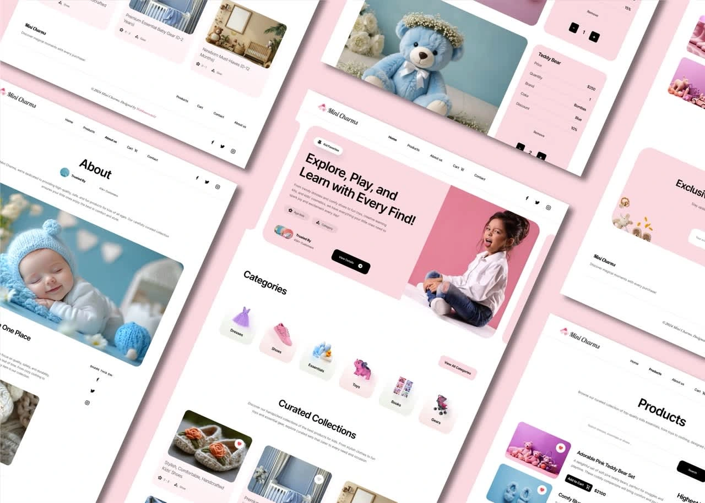
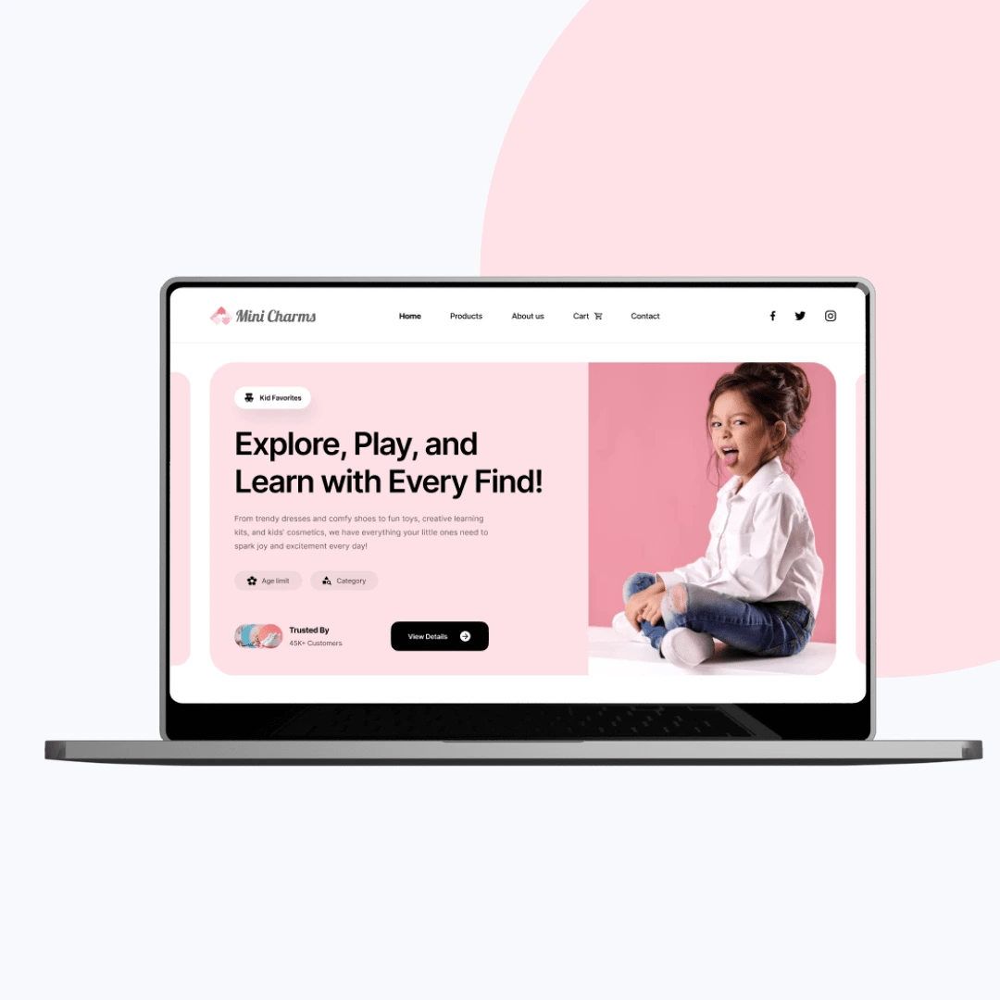
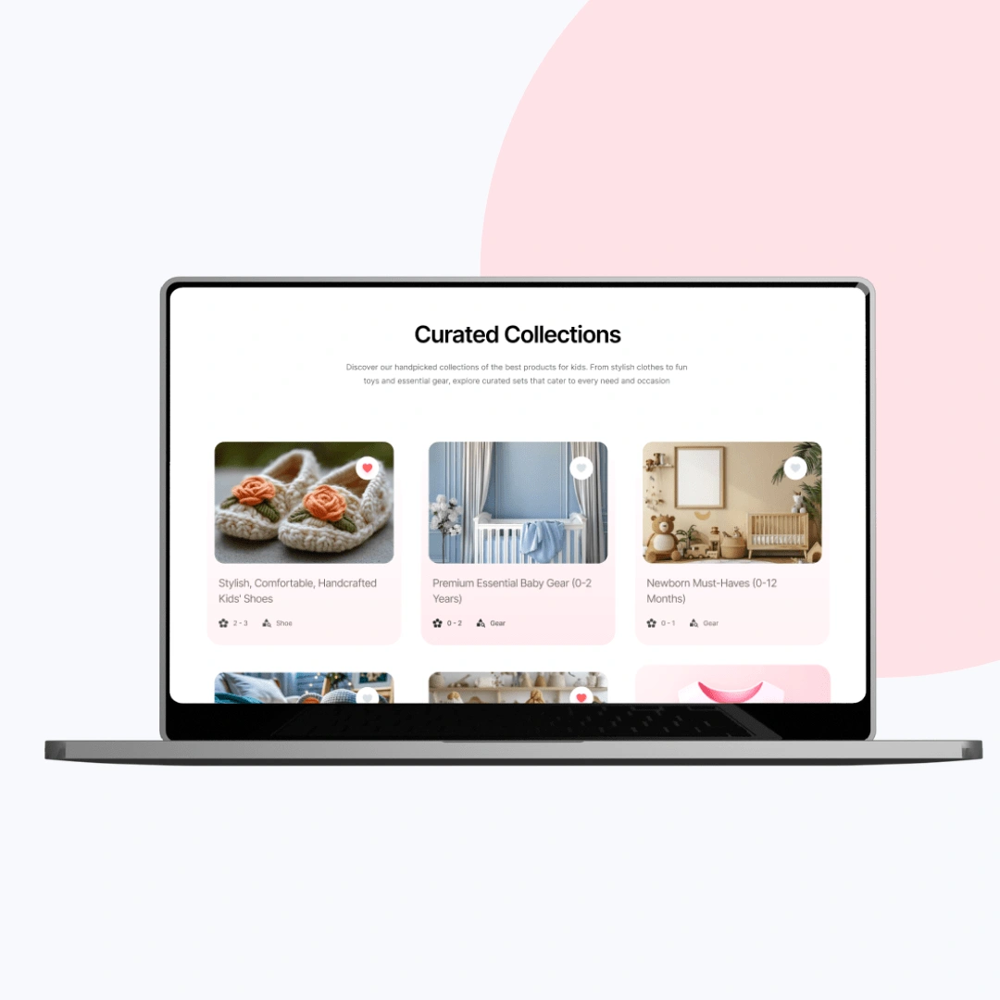
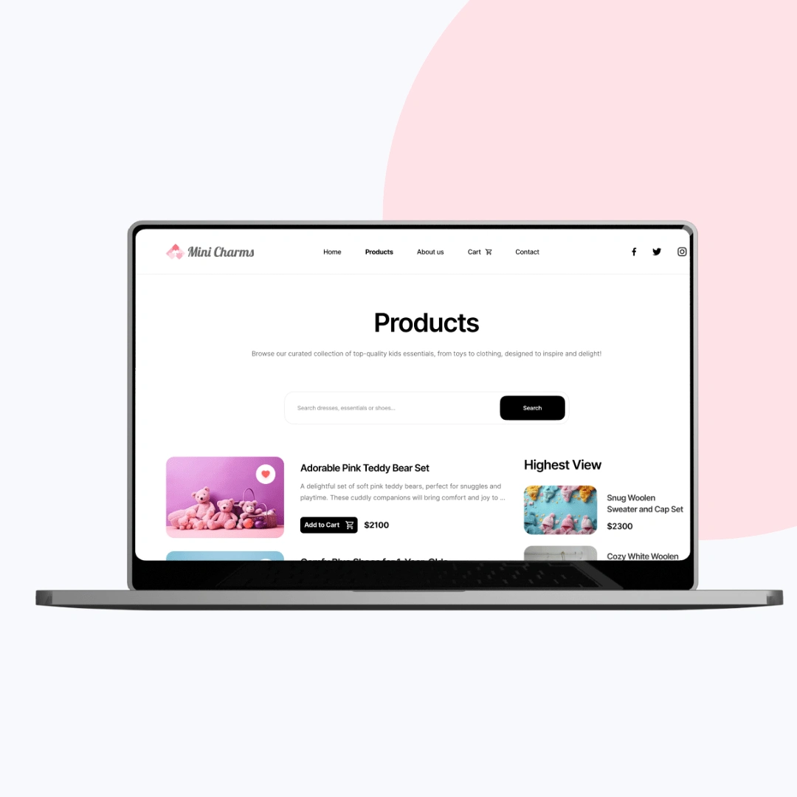
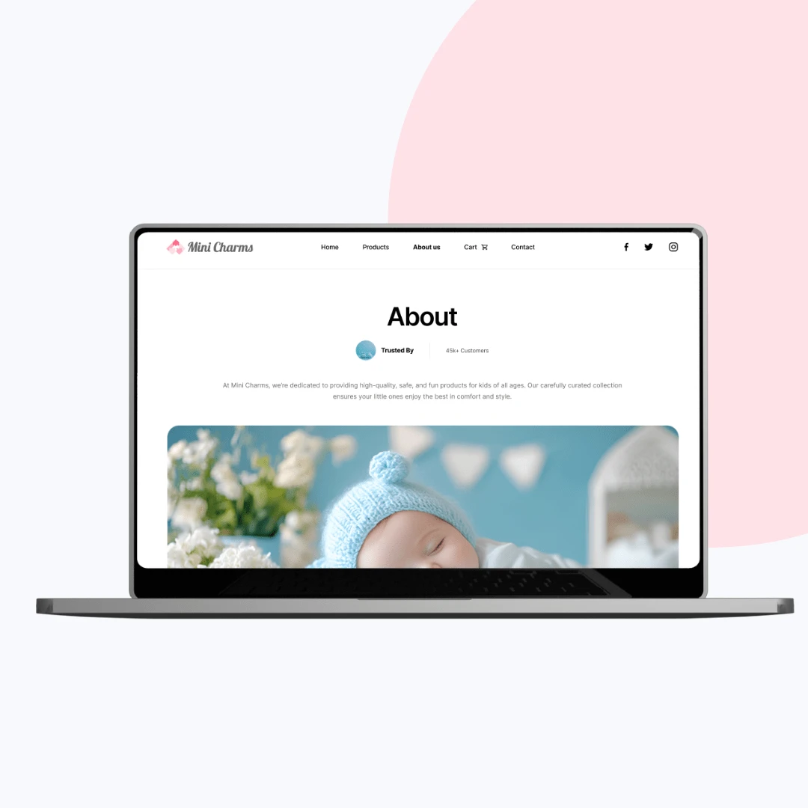
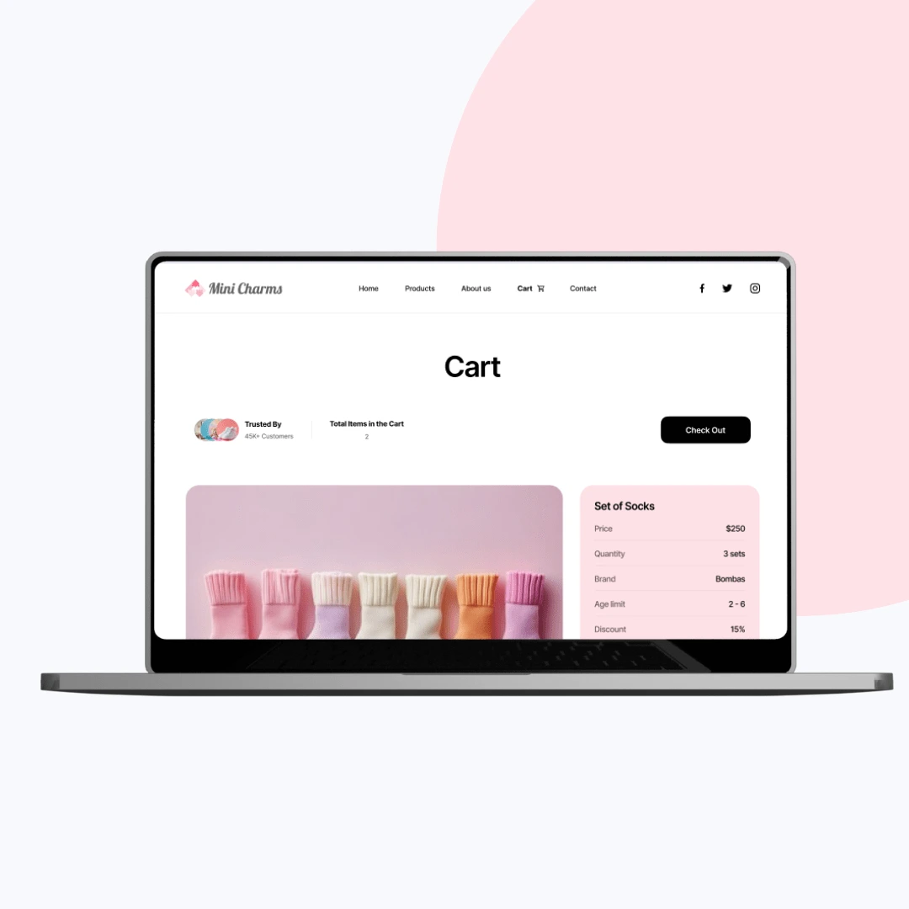

A playful storefront that makes parents' shopping effortless.
Mini Charms is an e-commerce brand for stylish children's apparel. I designed the UI/UX to balance the whimsy of childhood with the practicality parents expect, delivering a cheerful, mobile-first storefront built for easy browsing and fast checkout.

The objective
Mini Charms needed a shopping experience that felt visually joyful, reflecting the innocence and style of children's fashion, while staying effortless for the parents doing the buying. The brief called for an interface that was engaging and accessible across all screen sizes, plus informative touches like AI-driven recommendations and size guidance to reduce uncertainty at the point of purchase.
The design had to serve three distinct audiences at once: parents, gift buyers, and returning shoppers. Every flow was mapped around minimizing friction so browsing to checkout took as few steps as possible.


The approach
The team blended a playful visual language with practical utility. Pastel colors, soft typography, rounded buttons, and illustrated elements set a cheerful tone without overwhelming the shopper. A grid-based product layout kept browsing clean and filtering simple, while a smart shopping flow added one-click wishlist and intuitive size selection.
Mobile came first. Layouts prioritized thumb-friendly zones, large clickable areas, and sticky Buy Now buttons, with lazy-loaded imagery and performance-optimised assets to keep checkout fast on any device.


The outcome
Mini Charms now has a delightful, conversion-optimised storefront designed to build trust and delight. The calming, joyful aesthetic creates emotional appeal without overwhelming users, and the streamlined flow helps parents complete purchases in fewer steps.
The responsive, accessible interface holds up across devices, and the visual design supports the brand's storytelling. I delivered scalable design components, multi-device testing reports, and editable design files with documentation, leaving room for future expansion.
